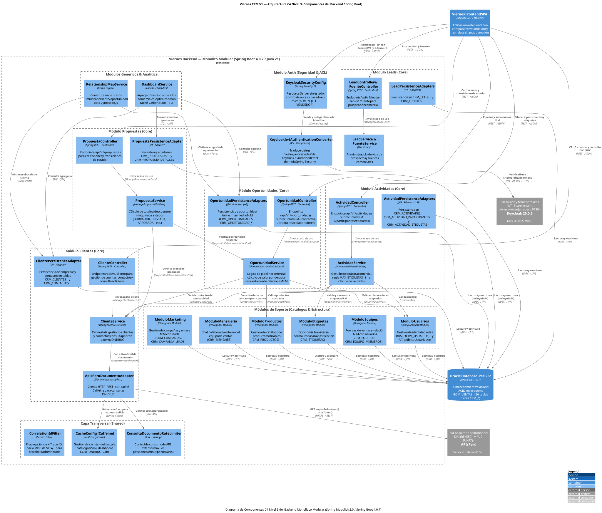
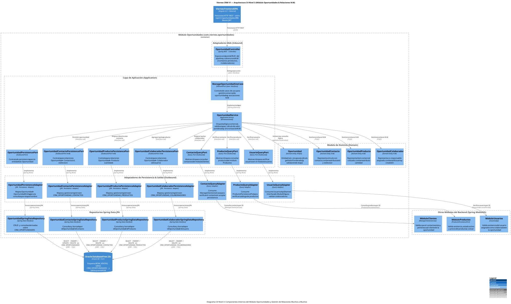
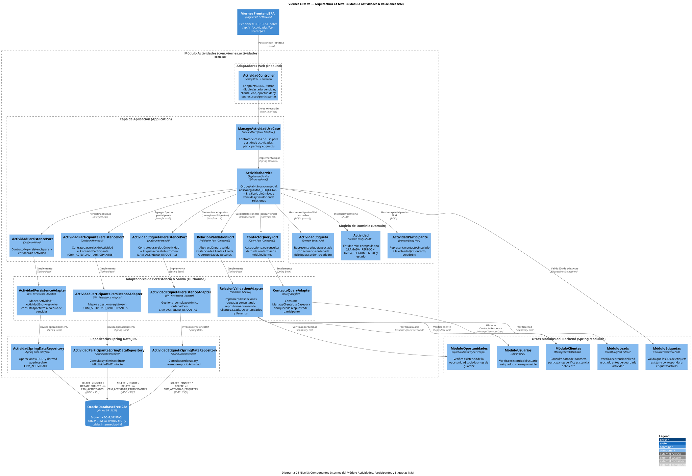

Actualización del Diagrama C4 Nivel 3 (Componentes)
Documento de ingeniería de software que reemplaza el diagrama C3 preliminar de la Sesión 2 (Lucidchart), incorporando la arquitectura hexagonal definitiva, la modularidad gobernada por Spring Modulith, la delegación de identidad en Keycloak y la implementación física de las 7 relaciones muchos a muchos (N:M) en Oracle Database 23c.
1. Justificación y Evolución Arquitectónica
El diseño preliminar concebía un backend básico con 8 módulos acoplados y sin soporte de relaciones complejas. La versión final de producción de Viernes CRM V1 implementa:
- Monolito Modular con Spring Modulith 2.0.7: Fronteras de módulo explícitas validadas en tiempo de compilación con
ModularityTests.java. - Arquitectura Hexagonal en 15 submódulos: Aislamiento completo de la lógica de dominio respecto al framework JPA y la base de datos Oracle.
- 7 Relaciones Muchos a Muchos (N:M) Físicas: Tablas intermedias independientes en Oracle con atributos contextuales (roles de decisores, cantidades de producto, secuencias de orden).
- Capa Anticorrupción (ACL) y Seguridad OAuth2: Desacoplamiento de la autenticación mediante Resource Server JWT integrado con Keycloak 25.
2. Diagrama C3 Principal: Componentes del Backend Spring Boot
Ilustra la arquitectura interna del contenedor Spring Boot, mostrando los módulos comerciales más importantes, sus controladores, servicios de aplicación, adaptadores de persistencia, puertos de comunicación inter-módulo y los sistemas externos.

2.1 Componentes Principales Representados
| Componente | Tipo Arquitectónico | Paquete Java | Responsabilidad y Colaboración |
|---|---|---|---|
KeycloakSecurityConfig |
Configuración Spring Security | com.viernes.auth.keycloak |
Define la cadena de filtros de seguridad, políticas CORS y autorización RBAC por endpoint. |
KeycloakJwtAuthenticationConverter |
Capa Anticorrupción (ACL) | com.viernes.auth.keycloak |
Traduce los claims realm_access.roles de Keycloak a autoridades ROLE_* de Spring Security. |
ClienteController / ClienteService |
Inbound Adapter / Service | com.viernes.clientes |
Gestión de cuentas corporativas, contactos y consultas oficiales a través de ApisPeruDocumentoAdapter. |
OportunidadController / OportunidadService |
Inbound Adapter / Service | com.viernes.oportunidades |
Control del embudo comercial, valor ponderado y sincronización de contactos, productos y colaboradores N:M. |
PropuestaController / PropuestaService |
Inbound Adapter / Service | com.viernes.propuestas |
Cotizaciones económicas con control de estados (Borrador → Enviada → Aprobada/Rechazada/Cancelada). |
ActividadController / ActividadService |
Inbound Adapter / Service | com.viernes.actividades |
Bitácora operativa con regla MAX_ETIQUETAS = 8 y validación cruzada vía RelacionValidationPort. |
UsuariosApi |
Named Public Interface | com.viernes.usuarios |
API pública de Spring Modulith para consultar y validar la existencia de usuarios entre módulos. |
DashboardService |
Facade / Analytics Component | com.viernes.dashboard |
Fachada que agrega KPIs comerciales desde múltiples repositorios con caché Caffeine (30s TTL). |
RelationshipMapService |
Graph Processing Engine | com.viernes.relationshipmap |
Construcción de grafos multicapa de clientes y oportunidades para visualización con Cytoscape.js. |
3. Diagrama C3 del Módulo Oportunidades: Componentes y Relaciones N:M
Detalla el funcionamiento interno del módulo Oportunidades, destacando cómo los servicios, puertos y adaptadores gestionan las tres relaciones muchos a muchos hacia contactos, productos y colaboradores sin acoplar la lógica de negocio.

3.1 Gestión de Relaciones N:M en Oportunidades
- Oportunidad ↔ Contacto: Modelado por la entidad de dominio
OportunidadContacto(con atributosrolyesDecisor). Persistido a través deOportunidadContactoPersistencePorten la tabla físicaCRM_OPORTUNIDAD_CONTACTOS.ContactoQueryAdaptervalida contra el módulo Clientes. - Oportunidad ↔ Producto: Modelado por
OportunidadProducto(con atributocantidad). Persistido medianteOportunidadProductoPersistencePortenCRM_OPORTUNIDAD_PRODUCTOS.ProductoQueryAdapterconsulta el catálogo maestro en el módulo Productos. - Oportunidad ↔ Colaborador: Modelado por
OportunidadColaborador(atributosidUsuarioycreadoEn). Persistido enCRM_OPORTUNIDAD_COLABORADORES.UsuarioQueryAdapterverifica la vigencia del usuario medianteUsuariosApi.
4. Diagrama C3 del Módulo Actividades: Participantes y Etiquetas N:M
Presenta los componentes del módulo Actividades, explicando la orquestación de la bitácora comercial, la restricción de etiquetas y la vinculación de múltiples contactos participantes.

4.1 Reglas y Componentes Internos de Actividades
- Actividad ↔ Participante: Gestionado por
ActividadParticipantePersistencePorte implementado enCRM_ACTIVIDAD_PARTICIPANTES. Permite vincular múltiples contactos a una misma llamada o reunión. - Actividad ↔ Etiqueta: Gestionado por
ActividadEtiquetaPersistencePortenCRM_ACTIVIDAD_ETIQUETAS. Aplica la reglaMAX_ETIQUETAS = 8y almacena el orden de presentación visual. - Validación Referencial Desacoplada:
RelacionValidationAdapterimplementaRelacionValidationPort, validando la existencia de clientes, leads, oportunidades y usuarios sin acoplar dependencias directas en la capa de aplicación.
5. Tabla Comparativa de Cambios respecto al Diagrama C3 Antiguo (Lucidchart S2)
| Dimensión de Comparación | C3 Antiguo (Lucidchart Sesión 2) | C3 Actual (Noviembre 2026 - Verificado) | Fundamento del Cambio |
|---|---|---|---|
| Gobernanza Modular | Capas tradicionales sin control de fronteras | Spring Modulith 2.0.7 con ModularityTests |
Previene acoplamiento indeseado y dependencias cíclicas en compilación. |
| Módulos Totales | 8 módulos iniciales | 15 submódulos documentados | Se formalizaron propuestas, relationshipmap, equipos, productos, etiquetas y marketing. |
| Relaciones N:M | 0 relaciones N:M (solo FK directas 1:N) | 7 relaciones N:M con tablas intermedias | Soporte a metadatos de relación (roles, cantidades cotizadas y orden de etiquetas). |
| Seguridad | JWT local simple (HS256) en el backend | OAuth2 Resource Server con Keycloak 25 | Delegación de autenticación a servidor OIDC independiente con flujo PKCE. |
| Capa Anticorrupción | Inexistente | Implementada en módulo auth |
Aisla roles internos de Keycloak y los traduce al modelo de dominio. |
| Consultas Oficiales | Inexistente | Integración con APIsPerú (RENIEC/SUNAT) | Validación oficial con caché Caffeine y limitación de tasa (rate-limit). |
| Persistencia Relacional | 10 tablas preliminares | 26 tablas físicas en esquema BOM_VENTAS |
Normalización física completa con 22 claves foráneas y 51 índices. |
6. Elementos que No Pudieron Verificarse o Limitaciones del Sistema
- Campañas de Marketing en Interfaz Web: El módulo y la tabla
CRM_CAMPANIA_LEADSexisten en backend y base de datos, pero la ruta frontend/campanasredirige al dashboard. - Máquina de Estados en Leads: A diferencia de las propuestas, el cambio de estado en prospectos no impone precondiciones en el backend.
- Servidor de Correo Saliente (SMTP): La acción de enviar propuesta actualiza el estado a
ENVIADAen Oracle, pero no efectúa el despacho de un correo electrónico real. - Eliminación Física de Usuarios: La interfaz REST no expone método DELETE para usuarios para evitar rupturas de integridad referencial histórica.